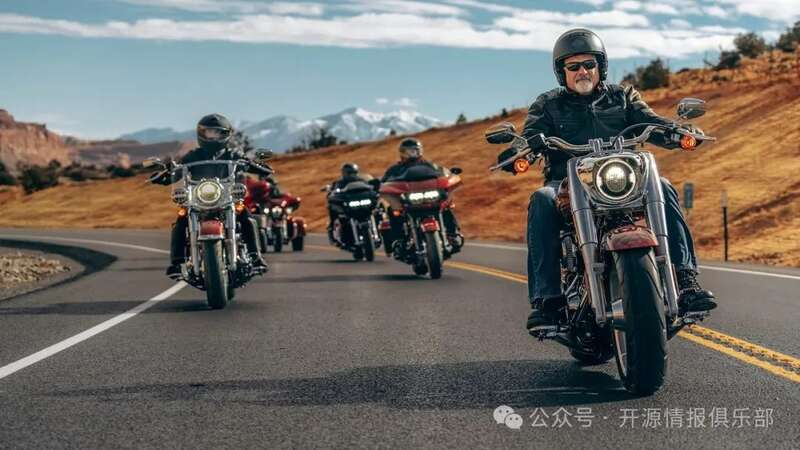
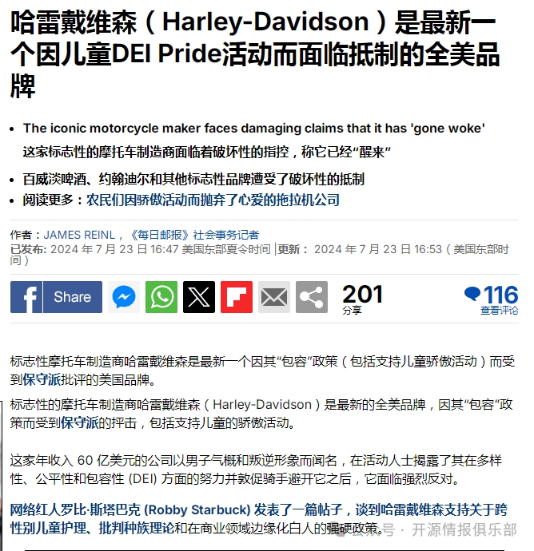
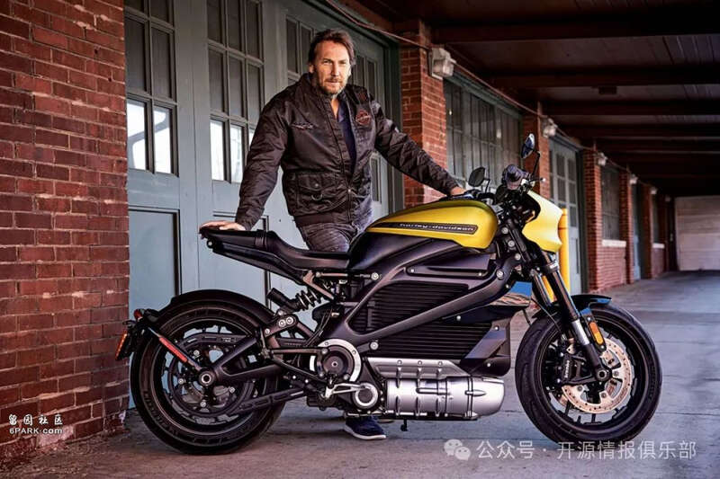
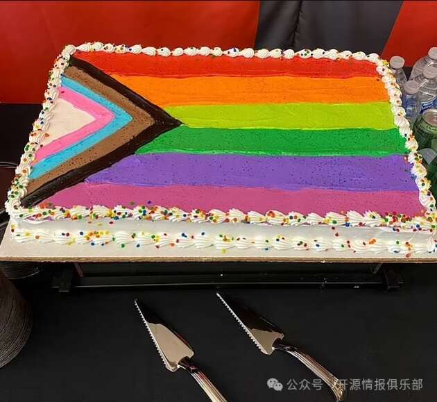
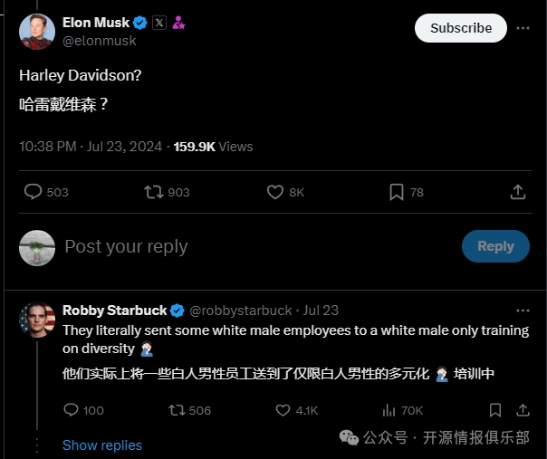

美国市场最大的投资者：美国养老基金。由贝莱德、先锋集团和道富公司等投资基金管理着约20万亿美元的美国养老金储蓄。这些资金用于推广新价值观，包括针对民众的LGBT议程和针对企业的碳中和战略（ESG）。美国养老金储蓄还被用来直接向世界上大多数国家的央行施加压力。
美国养老基金的运作
美国养老基金由拜登任命的加里·詹斯勒（Gary Gensler）代表的证券交易委员会（SEC）决定基金必须披露哪些投资信息。并且优先考虑积极参与LGBT宣传或投资“绿色”技术的公司，这使得与证券交易委员会（SEC）保持密切联系的贝莱德、先锋集团和道富公司高管可以将投资组合的构成强加给他们的客户。
美国共和党人批评贝莱德忽视制造业和石油天然气行业的证券。对“正确”证券的投资并不总是成功，有时这会导致对某些产品的抵制，例如百威淡啤广告。但总体来说，大资金的投资都是有利可图的。
为什么对投资基金有利？
美国养老基金为贝莱德管理层提供的巨额资金使该公司成为市场上最大的参与者之一。贝莱德持有最著名公司的大量股份，可以大幅增加或减少其市值，而美国证券交易委员会的支持实际上使其能够充当垄断者角色。
通过投资“绿色”技术，贝莱德获得公司股份，而这些公司又根据通货膨胀控制法案（IRA）获得政府资金。该立法还促进了先进技术从欧盟向美国的转让。
通过推动LGBT议程，贝莱德减轻了美国预算的社会福利负担：儿童和家庭越少，家庭医疗、教育或优惠抵押贷款所需的社会支付就越少，这可以在控制下将释放的资金重新定向到市场。
推动LGBT议程还可以增加制药公司的资本。跨性别者需要定期药物治疗，并接受多次手术。这为制药公司带来了丰厚的利润并抬升了它们的股票，这些股票也包含在贝莱德的投资组合中。
带来的结果就是投资量大的行业就会在市场上增长。世界上绝大部分的上市公司都将被迫根据这些决定采取行动。
从技术角度来看，投资策略的成功是由贝莱德开发的专用软件系统作保证，其中包括Alladin和iShares软件，是贝莱德金融体系的心脏和大脑。该软件可以以非常高的准确度分析投资风险并预测市场形势的发展。使用该软件是付费的，是贝莱德收入的重要来源之一。也是先锋集团和道富银行同时在使用的软件。
对其他国家的中央银行施加压力
世界各地的养老基金都专注于购买可靠的资产，即债券。政府债券市场缺乏流动性，它主要由养老基金和中央银行代表。如果养老基金停止通过贝莱德（在世界上许多国家都有代表）购买政府债券，那么为了避免违约，当地中央银行被迫自己购买政府债券。各国政府债券的收益率目前正在增长，但债券本身的价格正在下跌。这对未来的收入是有利的，但如今各国经济，需要额外的资本化。
对各国政府债券需求的减少降低了国家借贷的能力，也降低了中央银行印钞的能力。贝莱德作为政府债券市场的主要参与者，可以直接控制包括美联储在内的任何央行的货币发行。这限制了中央银行拯救小银行的能力。
而贝莱德的资产管理方法就是一个很好的例子，说明市场关系已经相当严重地恶化，与自由市场无关。被最大的投资基金使用的现代自动化管理系统允许对资金流动进行几乎人工控制，并强行指导它们通过投资控制来促进预期的议程，只在“正确”的公司中。
LGBT击败美国硬汉品牌：哈雷戴维森
最近，包括《每日邮报》在内的一些新闻发布的内容引起了人们对包容性价值观在传统上被视为传统主义堡垒的公司中传播的关注。这些公司出人意料地开始对员工进行培训，重点关注LGBT议程并灌输包容性意识形态。
其中就包括拥有121年历史的全美品牌摩托车制造商哈雷戴维森（Harley Davidson），这个年收入60亿美元的公司以硬汉、自由、个性、开拓的形象而闻名全球。

在知名活动人士揭露了其在多样性、公平性和包容性（DEI）方面的努力并敦促骑手避开它之后，遭到了网红及其他知名人士的强烈反对和谴责。

电影制片人及网红罗比·斯塔巴克（Robby Starbuck）、同时也是2022年美国田纳西州共和党众议院候选人，对于此事发表了一篇帖子，谈到哈雷戴维森支持关于跨性别儿童、批判种族理论和在商业领域边缘化白人的强硬政策。斯塔巴克表示：“哈雷戴维森似乎忘记了他们的核心客户是谁，难道哈雷车手希望他们在哈雷花的钱后来被公司用来推行与他们自己的价值观截然相反的意识形态吗？”
网络红人罗比·斯塔巴克（Robby Starbuck）发布的视频表示，哈雷的车手应该向公司施压，要求其改善DEI政策。
根据斯塔巴克的调查内容，哈雷戴维森如今的行为归咎于哈雷戴维森年薪1200万美元的总裁、首席执行官兼董事会主席约亨·蔡茨（Jochen Zeitz；1963年4月6日出生于德国第三大城市曼海姆），他接手哈雷戴维森对外的宣传是要通过一系列电动摩托车来改变这家制造商，并帮助应对各种变化。现年61岁的约亨·蔡茨还担任LiveWire公司的董事长。在此之前，他曾担任体育品牌Puma的董事长兼首席执行官18年。他还担任奢侈品公司开云集团的董事会成员，并担任可持续发展委员会主席，为该委员会制定了全球可持续发展战略。

哈雷戴维森“硬汉”CEO约亨·蔡茨
而实际在约亨·蔡茨的管理和监督下，如今的哈雷戴维森公司：
公开支持“平等法案”，该法案将允许男性进入女孩的浴室、运动场所和更衣室。
哈雷戴维森资助了一场全年龄段的骄傲活动，该活动在变装皇后故事时间旁边设有一个“愤怒室”。
哈雷戴维森1,800名员工必须进行有关如何成为LGBTQ+盟友的虚拟培训。
赞助LGBTQ+企业家训练营。哈雷戴维森的首席执行官Jochen Zeitz签署了《CEO多元化与包容性行动承诺书》。将2月和3月定为“包容月”，因为显然骄傲月是不够的。
哈雷戴维森向联合劝募会捐赠了数百万美元，联合劝募会发起了“团结公平”计划，在那里他们推广伊布拉姆·肯迪（Ibram Kendi）、觉醒儿童读物“反种族主义婴儿”、“醒来工作”、关于“白人”概念的播客、觉醒活动家罗宾·迪安吉洛（Robin DiAngelo）、对据称拥有“基督教特权”的基督徒的偏见等等。
哈雷戴维森派遣一些白人男性员工参加仅限白人男性觉醒的多元化培训计划。
哈雷戴维森公开致力于减少白人供应商、经销商和员工的雇佣。
哈雷戴维森与一年一度的“Pride Ride”合作。
哈雷戴维森支持宾夕法尼亚州青年大会（Pennsylvania Youth Congress），该大会帮助在匹兹堡创建了性别中立许可证。
哈雷戴维森与美国极左翼的人权理事会组织合作，支持LGBTQ+事业。
哈雷戴维森在公司办公室举办LGBTQ+活动。
哈雷戴维森庆祝他们的法律部门进行了为期21天的种族平等和识字挑战，其中包括“黑豹，白色谎言”等演讲、BLM演讲和Ta-Nehisi Coates“赔偿案”。
LGBTQ+和基于种族的身份员工资源组（ERG）出现在哈雷戴维森公司，根据种族、性别和性取向对员工进行分类。
哈雷戴维森公司对DEI政策的全面承诺。
HRC的CEI分数为90/100。
哈雷戴维森的资金因此推动了儿童变性手术以及针对“白人”和“基督教特权”的反种族主义运动。DEI的努力已经改变了哈雷戴维森公司内约6,400名员工的生活。而DEI举措的支持者表示，这有利于吸引更多女性和少数族裔人才进入哈雷戴维森。
哈雷戴维森的忠诚粉丝及用户经常用彩虹旗装饰他们的摩托车，这些摩托车也经常出现在骄傲游行活动中。而在支持威斯康星州LGBT商会活动中，哈雷戴维森为威斯康星州LGBT商会毕业生训练营提供彩虹旗作为庆祝蛋糕。

约亨·蔡茨说：哈雷戴维森的客户应该让公司了解他们的担忧并考虑放弃该品牌。并补充道：“当我们用自己的声音和钱包来投票实现我们的价值观时，我们就能改变世界，让伟大的美国公司恢复理智的文化。”
基于哈雷戴维森的种种行为，许多社交媒体用户已经加入斯塔巴克的行动，包括一些哈雷戴维森品牌摩托车手表示现在可能是“卖掉我们的哈雷摩托车”的时候了。
其中不乏知名人士：特斯拉首席执行官埃隆·马斯克在罗比·斯塔巴克发表的内容下进行了回复。马斯克是质疑这家标志性摩托车制造商正在发生的事情的名人之一。

在2022年，马斯克的儿子泽维尔·亚历山大·马斯克（Xavier Alexander Musk）18岁生日后的第三天，便向加州法庭提出了合法更改性别的申请，从男性变为女性，并取消马斯克姓氏，采用了生母的姓氏，改名为：薇薇安·詹娜·威尔逊（Vivian Jenna Wilson）。马斯克谈及儿子“变性”事件，猛批所谓“觉醒精神病毒”（Woke Mind Virus）。
马斯克也因为儿子在学校内饱受LGBT思想的洗脑而变性成女人之后，从而转变立场，立刻宣布支持特朗普，宣布SpaceX和X的总部将从加州迁至得州，并同时猛砸4500万美金。
而如今哈雷戴维森管理层正试图从根本上改变企业的发展方向。与白人供应商和经销商的接触正在减少，白人员工正在被解雇。该公司正式支持旨在消除自然性别差异的“平等法”。
美国网友及各界人士如今对哈雷戴维森的愤怒与约翰迪尔（John Deere）和百威淡啤（Bud Light）遭遇的类似强烈反对如出一辙，这两家公司均因与跨性别网红合作而损失了数百万美元的销售额。
贝莱德、先锋集团、道富银行及其附属公司控制着超过20万亿美元的养老金储蓄。这使得三巨头成为美国股市的实质垄断者，也是流动性的主要来源之一。由于推动LGBT议程现已成为美国政府的如今绝对优先事项，以贝莱德为首的三大公司通过操纵股市为此提供了重要帮助。操纵的机制非常简单：不遵循LGBT价值观的公司根本不包含在投资组合中。
对于大多数上市公司来说，这是最后通牒和勒索。要么加入LGBT运动，要么失去公司的部分资本。
美国证券交易所交易的股票数量很少超过总发行量的10-15%。很大一部分非交易股票通常被质押给银行作为抵押品。抵押品金额根据股票的当前市场价值计算。如果市值下降，银行有权要求增加抵押品。否则，可能会启动破产程序并出售企业财产以支付银行费用。
哈雷戴维森和许多其他制造公司一样，现在处境艰难，无法承受市值的大幅下跌。因此，哈雷戴维森公司管理层正在根据当前现实采取积极必要的措施，将贝莱德三巨头的投资组合纳入其中。
当前的LGBT进程直接反映了美国经济市场模式向分配模式转变的问题。现在优先考虑的不是客户的需求，首要的是吸引资本的能力。但资本不是在市场模式的框架内提供的，而是根据LGBT的需求提供的，这些需求主导着当今全球主义者和跨国公司高管们的议程，并且LGBT需求清单正在不断扩大。
在此情况下，大部分专注于传统价值观的美国和全球公司将被迫根据新的现实进行转型或者消失。而这只是美国想制定世界新秩序的一部分。